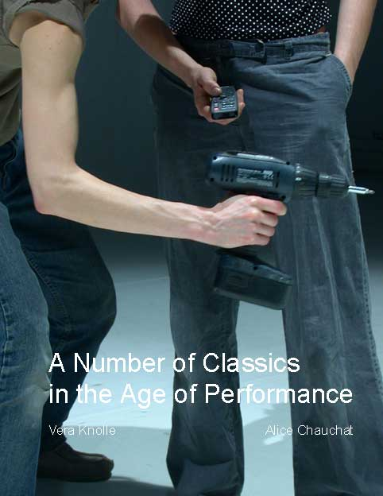

A Number of Classics in the Age of Performance
collaboration with Vera Knolle
2003

photo Tor Lindstrand
Suddenly it was everywhere.
The p-word.
Performance.
„performance“ has become a new paradigm present in various fields of social, cultural, economic, scientific practices. It concerns dancers and actors just as much as sales managers, athletes, computer networks, genetically modified organisms, … Its meaning shifts from field to field, yet some implied notions remain, such as reproduction, adaptability, creativity, improvement.
Everything and everybody today is understood to produce one’s own identity, constantly anew and striving for the better.
Once everything is acknowledged to be “just” performance, still every performance constitutes a reality that affects people, situations, etc. And one is left to wonder if this new paradigm makes life a role game or an authoritarian system wherein each and everybody has to optimize under threat of being obsolete.
Alice Chauchat and Vera Knolle observe the various manifestations of performance through the eye of theatre.
Credits
Concept, performance, production Alice Chauchat & Vera Knolle; Music James Bond Theme, Frank Sinatra, David Bowie, Kayamba traditional recorded by David Fanshawe and Britney Spears; Text Thierry de Duve, Wolfgang Friedrch, John L. Austin, Gaëtan Bulourde, William Wheeler, Judith Butler, Lews Caroll, Dorothea von Hantelman, Friedrich Nietzsche, John R. Searle, Sophocles and quotes from the films After The Fox, Men in Black and Shrek; Video material Wimbledon 90, Robots demonstration, Bon Appétit Bien Sûr & Interview with the venue's programmer
|